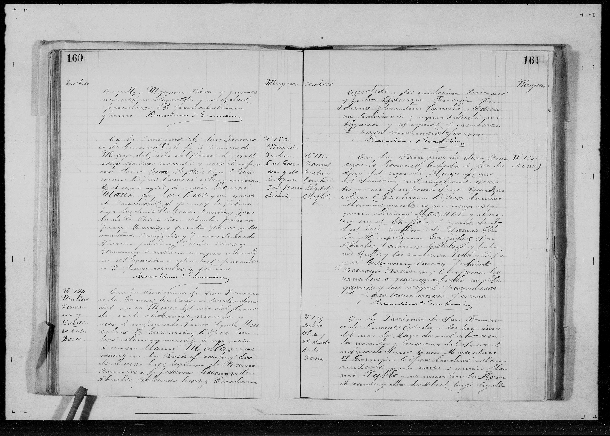

María de la Luz García Peña

Información Genealógica
Nombre: María de la Luz García Peña
Relevancia: Figura matriarcal fundamental en la preservación de las tradiciones y la genealogía familiar en la región.
Transcripción del Documento
[Documento gráfico adjunto. Pendiente de transcripción paleográfica detallada.]